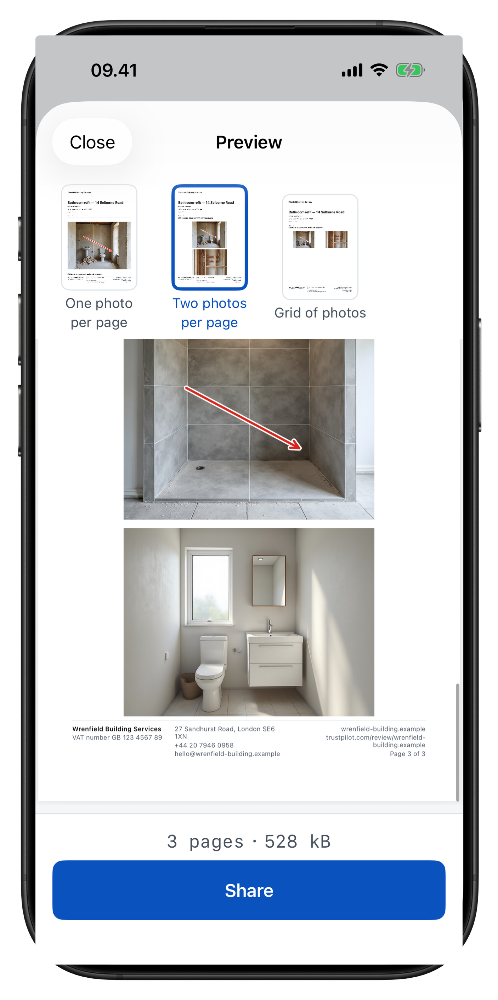
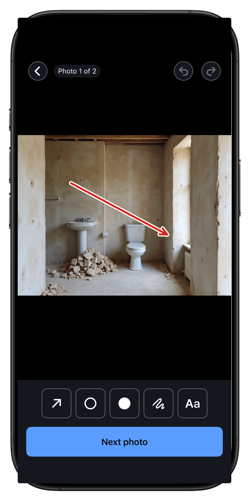
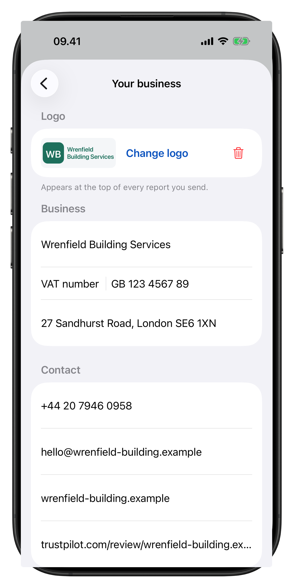
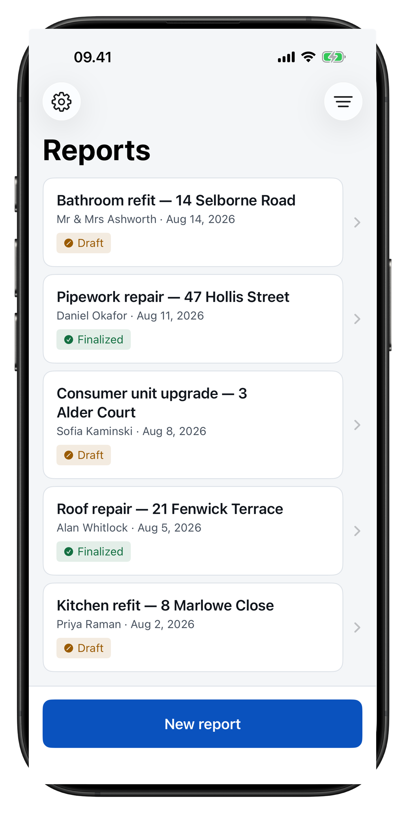

Straight from the photo
Mark up right on the image you just took — one tap, no saving and reopening. Come back days later and add more.
For tradespeople who show their work
Photograph the work, mark up what matters with arrows and circles, and hand over a professional PDF before you have packed up your tools. Made on site. In under a minute.
No subscription No account Works with no signal Your photos stay yours




The core loop
Thirty seconds of Provaro doing what it exists to do — filmed on camera, not a mock-up.
How it works
Gloves on, bad light, one hand. Big buttons, no fiddling, no saving-and-reopening.
Stay in the camera and shoot a whole room without leaving the viewfinder. Already have the photos? Bring in as many as you like from your camera roll.
Arrows, circles, dots, freehand and text callouts — six colours, at a size you set. One tap straight from the photo you just took. Nothing is baked in; your original photo is never touched.
Your logo up top, registration and contact details along the bottom of every page. See the finished PDF and its size before you send it — small enough to email, ready to WhatsApp, AirDrop or print.
Features
Mark up right on the image you just took — one tap, no saving and reopening. Come back days later and add more.
Add the address in a tap; the report carries a map of where you were, so the paper shows the place.
Keep the words you write over and over and drop them into a caption with one tap.
One photo per page, two-up for before and after, or a grid for dense documentation. Cover page on or off.
Logo and company name at the head; registration, address, phone, email and review link along the foot of every page.
See the finished document and how big the file is, so nothing surprises the customer or your data plan.
Search, sort and archive every job you have documented — find the last painting in a house, fast.
WhatsApp, iMessage, email, AirDrop — whatever your customer already uses.
With Pro, reports sync through your own iCloud: start on the phone at the job, finish on the iPad in the van.
Basements. Lofts. Half-built houses. Everything happens on the phone in your hand — capture, markup, the PDF, the lot. No connection at any step, nothing waiting on an upload. When you are back in range, send it whenever you like.
No login, no email to hand over, no trial counting down and no sales call. Your reports never leave your device unless you send them yourself. There is no advertising identifier, no ad network and nothing sold to anybody.
Anonymous usage figures — which screens get opened, how long an export takes — never your photos, notes, customers or addresses — tell us what to build next. And Settings has a switch to turn them off.
Pricing
Because the last thing you need is another subscription.
0 € forever
The whole job — it is not a trial, and it never expires.
19.99 € one time · 149 DKK
Bought once, yours for good — nothing to cancel, no renewal to be surprised by.
Available in the app on the App Store.
iPhone and iPad. English and Danish on the App Store.
A subscription-free app. Nothing here is an ad and nothing is tracked about you as a visitor.